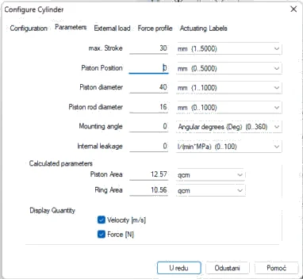
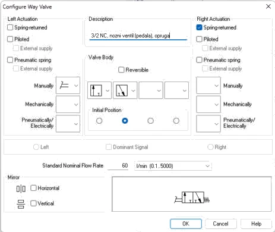
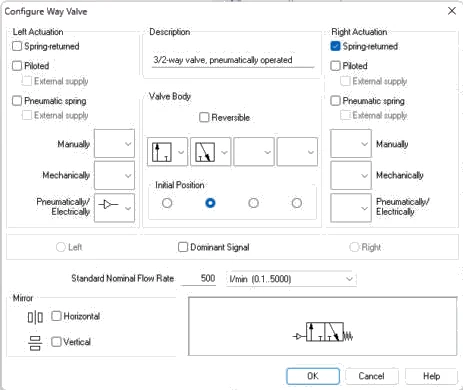
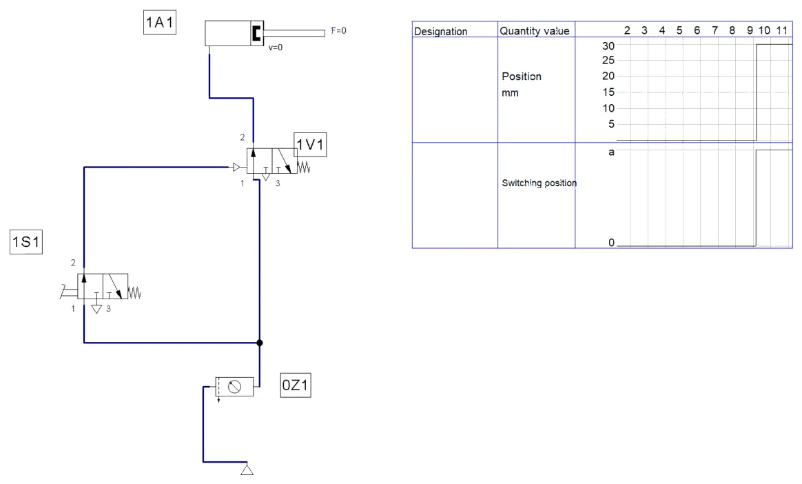
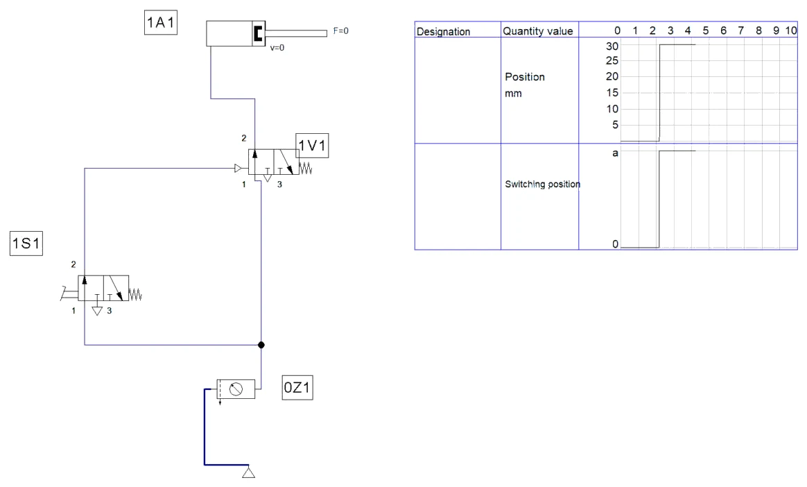
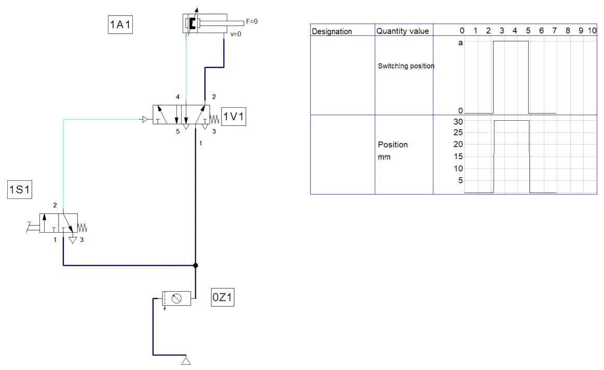
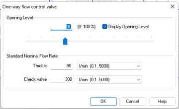
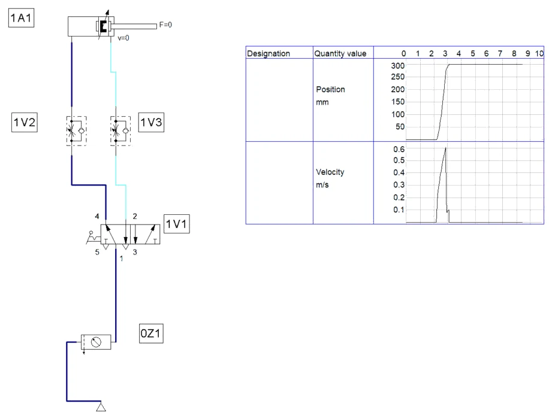
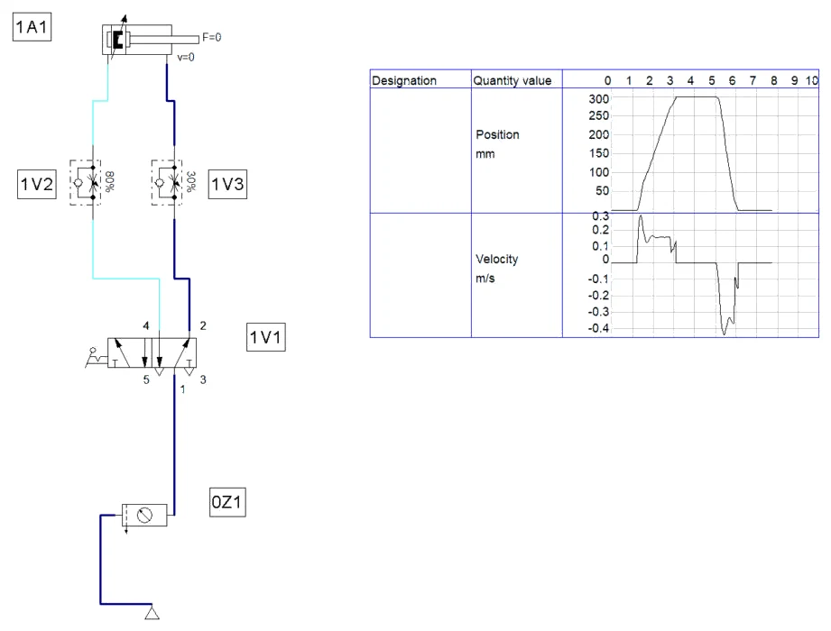

POSTUPAK · RADNI LIST V02 · FLUIDSIM
Postupak V02 · vježbe V3 i V4 · 4 sata
Postupak V02 — indirektno upravljanje i brzina klipnjače u FluidSIM-u
Cijeli radni list V02 korak po korak: indirektno upravljanje jednoradnim cilindrom nožnim ventilom i razvodnikom s pneumatskim upravljanjem, zatim namještanje brzine dvoradnog cilindra prigušno-nepovratnim ventilima. Uz svaki korak su snimke zaslona i potpuna rješenja.
- nacrtati indirektno upravljanje jednoradnim cilindrom s nožnim ventilom 3/2 NC i razvodnikom s pneumatskim upravljanjem
- razlikovati radni i upravljački vod te oznake 1A1, 1V1 i 1S1
- zamijeniti jednoradni cilindar dvoradnim i razvodnikom 5/2
- konfigurirati razvodnik 5/2 s ručicom i zasunom te ispuhe 3 i 5
- namjestiti brzine izvlačenja i uvlačenja prigušivanjem odlaznog zraka i očitati ih s dijagrama
- spremiti shemu, popuniti zapis simulacije i predati rad
O postupku
Ova stranica je postupak za radni list V02: sve što se radi na računalu, od nove sheme do predaje, redom kojim je zadano. Tekst zadatka, sheme, pitanja i rješenja isti su kao na stranicama vježbi V3 Indirektno upravljanje jednoradnim cilindrom i V4 Upravljanje brzinom klipnjače cilindra; ovdje su dopunjeni koracima u FluidSIM-u i rezultatima simulacije.
Rješenja su skrivena ispod svakog pitanja. Najprije riješite sami, a onda otvorite Prikaži rješenje i usporedite.
Gotove sheme (rješenja) za FluidSIM
- PIH_V03_rjesenje_v01.ct — dio A: shema V3.1 (nožni ventil 1S1, razvodnik 1V1 s pneumatskim upravljanjem, jednoradni cilindar), dijagram put–korak
- PIH_V03_z8_rjesenje_v01.ct — dio A, zadatak 8: dvoradni cilindar i razvodnik 5/2
- PIH_V04_rjesenje_v01.ct — dio B: shema V4.1 (ručica sa zasunom, 1V2 80 %, 1V3 30 %), dijagram položaja i brzine
Datoteke se otvaraju u FluidSIM-P 4 (File → Open). Snimke zaslona napravljene su u FluidSIM-P 4.2 s engleskim sučeljem. Osnove rada u FluidSIM-u (nova shema, knjižnica, crtanje vodova, provjera, simulacija, dijagram put–korak) opisane su u Postupku V01, odjeljak 0.
0 · Prije početka
- File → New (Ctrl + N) otvara novu shemu; Window → Tile Vertically (Shift + F4) postavlja shemu i knjižnicu jednu uz drugu.
- Elemente povucite iz knjižnice na shemu i dvoklikom otvorite njihove dijaloge. Vod crtajte povlačenjem od priključka do priključka; povlačenjem na postojeći vod nastaje račvanje.
- Oznake (1A1, 1V1, 1S1, 0Z1 …) upisuju se elementom Text iz skupine Miscellaneous (uključite Frame Text).
- Execute → Check Superficially (F6) provjerava crtež; Start (F9), Pause (F8), Stop (F5).
- Ručno tipkalo aktivirate klikom mišem (dok držite tipku miša); Shift + klik zadrži ga pritisnutim. Ručica sa zasunom prebacuje se jednim klikom i ostaje u položaju.
- Granični ventil veže se uz cilindar oznakom: dvoklik na cilindar → kartica Actuating Labels → oznaka (npr. 1S2) i položaj na hodu (od–do u mm); ista oznaka upiše se dvoklikom na valjak graničnog ventila (Mechanical connection → Label).
- Dijagram put–korak: iz Miscellaneous povucite State Diagram i na njega povucite cilindre i ventile čije stanje želite pratiti.
Dio A · V3 Indirektno upravljanje jednoradnim cilindrom
Zadatak
Na stupnoj bušilici buše se provrti u malim lijevanim nosačima. Obradak se ulaže u prizmu, a steže ga jednoradni cilindar 1A1 promjera 40 mm i hoda 30 mm s povratnom oprugom (uzmimo silu opruge na kraju hoda 40 N i gubitke trenja 10 %). Cilindar je na stolu bušilice, a radnik stoji oko 4 m dalje, uz upravljačku ploču; ruke su mu potrebne za ručicu bušilice, pa stezanje uključuje nožnim ventilom.
Kada bi nožni ventil izravno punio cilindar, radni vod od 4,5 m trošio bi mnogo zraka, a velik nožni ventil bio bi skup. Zato se primjenjuje indirektno upravljanje: nožni ventil 1S1 (3/2 NC, mali nazivni protok) šalje samo tlačni signal tankom cijevi PU 4/2,5 mm duljine 4 m do razvodnika 1V1 (3/2 NC s pneumatskim upravljanjem i povratnom oprugom). Razvodnik 1V1 postavljen je uz cilindar i povezan s njim cijevlju PU 8/6 mm duljine 0,5 m. Mreža daje 6 bar; u satu se obradi oko 60 komada.
Složite sklop, pustite ga u rad, izmjerite najmanji upravljački tlak razvodnika 1V1 i odgovorite na pitanja.
Sigurnost pri radu
Pažnja
Spajajte samo odzračen sustav i nosite zaštitne naočale. Stezni cilindar razvija silu veću od 600 N: ne stavljajte prste između klipnjače i obratka ni pri probnom radu. Pri mjerenju upravljačkog tlaka tlak podižite polako, u koracima od 0,2 bar, jer razvodnik prebacuje naglo i cilindar tada izlazi punom silom. Kolut tanke cijevi učvrstite da se pri spajanju ne razmota i ne povuče priključak.
Shema
Na slici V3.1 sklop je podijeljen na dva dijela. Signalni dio čine nožni ventil 1S1 i tanki upravljački vod, nacrtan iscrtkano. Energetski dio čine razvodnik 1V1 i cilindar 1A1, spojeni kratkim radnim vodom. Priključak 12 na razvodniku 1V1 znači da tlak na tom upravljačkom priključku spaja priključak 1 s priključkom 2.
Vježba se radi u FluidSIM-u
Koraci postupka vježbe koji se odnose na spajanje na didaktičkoj ploči i mjerenje štopericom ili manometrom izvode se u simulaciji. Gdje simulacija ne može pokazati pojavu iz pokusa, to je napisano uz korak.
A1 · Shema V3.1 u FluidSIM-u
- File → New. Iz Supply Elements povucite izvor stlačenog zraka i pripremnu grupu; pripremnoj grupi dvoklikom postavite Nominal Pressure 0,6 MPa. Oznaka 0Z1.
- Iz Actuators povucite Single acting cylinder. Dvoklik → kartica Parameters: max. Stroke 30 mm, Piston diameter 40 mm, Piston rod diameter 16 mm; uključite prikaz Velocity i Force (Slika A1.1). Oznaka 1A1.
- Iz Configurable directional valves povucite 3/n Way Valve za nožni ventil. Dvoklik → lijevo Manually = papučica (pedal), desno Spring-returned; polja razvodnika lijevo 1 → 2, desno 2 → 3; početni položaj desno polje (3/2 NC). Standard Nominal Flow Rate 60 l/min (mali ventil), opis „3/2 NC, nozni ventil (pedala), opruga” (Slika A1.2). Oznaka 1S1.
- Još jedan 3/n Way Valve za razvodnik uz cilindar: lijevo Pneumatically/Electrically = pneumatsko upravljanje (priključak 12), desno Spring-returned; ista polja (3/2 NC); 500 l/min (Slika A1.3). Oznaka 1V1.
- Spojite: izlaz 0Z1 → priključak 1 razvodnika 1V1 i (račvanjem) priključak 1 nožnog ventila 1S1; priključak 2 ventila 1S1 → upravljački priključak 12 razvodnika 1V1 (to je tanki upravljački vod); priključak 2 razvodnika 1V1 → priključak cilindra. Priključci 3 ostaju slobodni (ispuh).
- Check Superficially (F6) → No superficial errors detected. Na shemu postavite State Diagram i povucite na njega 1A1 (Position) i 1S1 (Switching position).
Što FluidSIM ne traži
Sila opruge cilindra (40 N) i gubici trenja (10 %) iz zadatka ne upisuju se: jednoradni cilindar u FluidSIM-u ima svoju povratnu oprugu i nema trenja. Ti se podaci koriste u računu (pitanje 2).



A2 · Simulacija
- Start (F9). Mišem pritisnite i držite papučicu 1S1: signal ide upravljačkim vodom na 12, 1V1 prebaci i cilindar steže (Slika A2.1).
- Otpustite papučicu: signal nestane, opruga vrati 1V1, komora se odzrači kroz ispuh 3 razvodnika 1V1 i opruga cilindra uvuče klipnjaču (Slika A2.2).
- Stop (F5), pripremnu grupu postavite na 0,3 MPa i ponovite: sklop radi i pri 3 bar. Vratite 0,6 MPa i spremite.


Najmanji upravljački tlak i histereza
Razvodnik u FluidSIM-u je idealan: prebacuje bez trenja i bez histereze. Zato se pokus s regulatorom u upravljačkom vodu (najmanji tlak prebacivanja i tlak povrata) ne može izvesti u simulaciji; vrijednosti 2,2 bar i 1,4 bar zadane su u pitanju 4.
Rezultati u tekstu odnose se na našu simulaciju i priložene datoteke; vaša se vremena mogu malo razlikovati ako drukčije namjestite protoke ili otvore prigušnica.
A3 · Pitanja i zadaci
1. Objasnite oznake 1A1, 1V1 i 1S1. Zašto je nožni ventil označen slovom S, a razvodnik uz cilindar slovom V?
Prikaži rješenje
Prvi broj je broj upravljačkog lanca (lanac cilindra 1). Slovo označava vrstu elementa: A izvršni element (cilindar), V ventil koji upravlja izvršnim elementom ili obrađuje signal, S signalni element (tipkalo, papučica, granični ventil). Zadnji broj je redni broj elementa te vrste u lancu. 1S1 samo daje signal, a 1V1 propušta radni zrak u cilindar.
2. Izračunajte steznu silu cilindra pri 6 bar i pri 3 bar.
Prikaži rješenje
A = π · 40² / 4 = 1256,6 mm². F = p · A · 0,9 − Fop.
6 bar: 0,6 · 1256,6 · 0,9 − 40 = 639 N. 3 bar: 0,3 · 1256,6 · 0,9 − 40 = 299 N.
Sila opruge smanjuje steznu silu, a pri niskom tlaku njezin je udio sve veći.
3. Izračunajte potrošnju zraka po jednom stezanju za ovaj sklop i za direktno upravljanje u kojem bi cijev 8/6 bila duga 4,5 m. Koliko se zraka uštedi u satu (60 stezanja)?
Prikaži rješenje
Cilindar: 1256,6 · 30 = 37 699 mm³. Radni vod 8/6, 0,5 m: 28,27 · 500 = 14 137 mm³. Upravljački vod 4/2,5, 4 m: 4,91 · 4000 = 19 635 mm³.
Indirektno: (37 699 + 14 137 + 19 635) · 6,923 / 10⁶ = 0,495 Nl po stezanju.
Direktno: 28,27 · 4500 = 127 235 mm³; (37 699 + 127 235) · 6,923 / 10⁶ = 1,142 Nl, dakle 2,3 puta više.
U satu: 60 · (1,142 − 0,495) = 38,8 Nl uštede. Ušteda nije velika u apsolutnom iznosu, ali se zbraja na svim steznim mjestima u pogonu.
4. Izmjerili ste da 1V1 prebacuje pri 2,2 bar i vraća se pri 1,4 bar. Kako se zove ta pojava i je li opasna za ovaj sklop?
Prikaži rješenje
Razlika između tlaka uključivanja i isključivanja je histereza razvodnika; posljedica je trenja klipa razvodnika i razlike površina na koje djeluje tlak. Za ovaj sklop nije opasna: signal iz 1S1 ima punih 6 bar, pa je daleko iznad praga. Postaje važna kada je upravljački tlak nizak ili kada signal slabi zbog propuštanja. (Vrijednosti su primjer; vaše ovise o razvodniku.)
5. Zašto se razvodnik 1V1 postavlja što bliže cilindru, a 1S1 može biti daleko?
Prikaži rješenje
Kroz 1V1 prolazi radni zrak; kratak i širok vod znači mali obujam koji se puni pri svakom hodu, malu potrošnju i brzo gibanje. Kroz 1S1 prolazi samo zrak potreban za punjenje tankog upravljačkog voda i upravljačke komore 1V1, pa duljina tog voda malo utječe na potrošnju. Cijena je nešto kasnije prebacivanje zbog punjenja upravljačkog voda.
6. Tijekom bušenja radnik slučajno podigne nogu s papučice. Što se događa i kako biste sklop poboljšali?
Prikaži rješenje
Signal na 12 nestaje, opruga vraća 1V1 u mirovanje, komora se odzračuje i opruga cilindra otpušta obradak dok svrdlo još reže — obradak se može zavrtjeti sa svrdlom. Stezanje koje traje samo dok traje signal nije prikladno. Bolje rješenje je razvodnik s memorijom (bistabilni 3/2 ili 5/2 s dva upravljačka priključka): jedan signal steže, drugi otpušta, a kratkotrajni gubitak signala ne mijenja stanje. Dodatno se stezanje može povezati s uključenjem vretena.
7. Koliki se obujam zraka troši samo na signal (punjenje upravljačkog voda) u satu? Isplati li se tu štedjeti skraćivanjem voda?
Prikaži rješenje
19 635 mm³ · 6,923 / 10⁶ = 0,136 Nl po signalu; · 60 = 8,2 Nl/h. To je zanemarivo prema potrošnji stroja, pa se duljina upravljačkog voda bira prema rasporedu radnog mjesta, a ne prema potrošnji zraka.
8. Stezanje treba izvesti dvoradnim cilindrom Ø40/16 tako da se i otpuštanje ostvaruje tlakom. Nacrtajte shemu uz isti nožni ventil 1S1.
Prikaži rješenje
Umjesto 3/2 koristi se razvodnik 5/2 s pneumatskim upravljanjem (14) i povratnom oprugom. U mirovanju 1 je spojen s 2 (strana klipnjače), pa tlak drži klipnjaču uvučenu; signal na 14 spaja 1 s 4 i cilindar steže. Sila povrata je 0,6 · 1055,6 · 0,9 = 570 N umjesto slabe opruge. Funkcija bez memorije ostaje ista kao u zadatku 6.
U FluidSIM-u
- Novu shemu spremite pod drugim imenom. Jednoradni cilindar zamijenite dvoradnim (Double acting cylinder, hod 30 mm, Ø40/16).
- Razvodnik 1V1 zamijenite razvodnikom 5/2 s pneumatskim upravljanjem i povratnom oprugom (Frequently Used Way Valves → Pneumatically Operated, 500 l/min).
- Priključak 4 → klipna komora, priključak 2 → prstenasta komora, signal 1S1 na 14. Start: dok je papučica pritisnuta, cilindar steže; otpuštanjem ga tlak vraća (Slika A3.1).

Dio B · V4 Upravljanje brzinom klipnjače cilindra
Zadatak
Kabina za pjeskarenje ima klizna zaštitna vrata mase oko 18 kg. Vrata pomiče dvoradni cilindar 1A1 Ø32/12 mm s hodom 300 mm: izvlačenjem se vrata zatvaraju, uvlačenjem otvaraju. Radnik ih uključuje ručnim razvodnikom 5/2 s ručicom i zasunom (1V1), koji ostaje u postavljenom položaju i nakon što se ručica pusti. Mreža daje 6 bar, a vrata se otvaraju i zatvaraju oko 30 puta u satu.
Bez prigušivanja vrata udaraju u krajnji položaj brzinom većom od 0,5 m/s, što je opasno za ruke i oštećuje vodilice. Zadano je: zatvaranje u 2,0 s (srednja brzina 0,15 m/s), otvaranje u 1,0 s (0,3 m/s). Brzine se namještaju dvama prigušno-nepovratnim ventilima 1V2 i 1V3 ugrađenima uz priključke cilindra, tako da se prigušuje odlazni zrak.
Složite sklop, namjestite zadana vremena, zabilježite mjerenja i zatim pokusom usporedite prigušivanje odlaznog i dolaznog zraka.
Sigurnost pri radu
Pažnja
Cilindar s hodom 300 mm pri punom tlaku izlazi vrlo brzo i s velikom energijom. Prije prvog puštanja tlaka obje prigušnice zatvorite pa otvorite približno jedan okretaj, kako cilindar ne bi „izletio". Cilindar čvrsto pričvrstite i ne držite ruke na putu klipnjače. Prigušni vijak okrećite samo alatom ili rukom izvan područja gibanja. Zapamtite: prigušnica smanjuje brzinu, ali ne smanjuje silu kad se klipnjača zaustavi na zapreci.
Shema
Na slici V4.1 prigušno-nepovratni ventili ugrađeni su neposredno uz priključke cilindra. Nepovratni ventil propušta dolazni zrak slobodno prema cilindru, a odlazni zrak mora kroz prigušnicu. Pri izvlačenju zrak izlazi iz prstenaste komore, pa brzinu zatvaranja određuje 1V3; pri uvlačenju zrak izlazi iz komore klipa, pa brzinu otvaranja određuje 1V2.
Vježba se radi u FluidSIM-u
Koraci postupka vježbe koji se odnose na spajanje na didaktičkoj ploči i mjerenje štopericom ili manometrom izvode se u simulaciji. Gdje simulacija ne može pokazati pojavu iz pokusa, to je napisano uz korak.
B1 · Shema V4.1 u FluidSIM-u
- File → New. Izvor i pripremna grupa 0Z1 (0,6 MPa).
- Double acting cylinder: kartica Parameters — hod 300 mm, Ø 32 / 12 mm, prikaz Velocity uključen (Slika B1.1). Kartica External load: Moving mass 18 kg (masa vrata). Oznaka 1A1.
- Iz Configurable directional valves povucite 5/n Way Valve. Dvoklik → lijevo Manually = ručica sa zasunom (lever with detent), desno bez opruge; polja 5/2; 500 l/min. Oznaka 1V1.
- Priključci 3 i 5 konfigurabilnog razvodnika u FluidSIM-u su zatvoreni dok ih ne odredite: dvoklik na priključak → Terminator → ispuh (exhaust). Bez toga zrak iz cilindra nema kamo izaći.
- Iz Shutoff Valves and Flow Control Valves povucite dva One-way flow control valve: 1V2 u vod klipne komore, 1V3 u vod prstenaste komore. Oba okrenite (desni klik → Rotate) tako da nepovratni ventil propušta zrak prema cilindru, a odlazni zrak mora kroz prigušnicu (prigušivanje odvoda).
- Dvoklik na prigušno-nepovratni ventil: Opening Level u %, Display Opening Level uključen, Throttle 90 l/min, Check valve 300 l/min (Slika B1.2). Nazivni protok nepovratnog ventila neka bude velik, inače on, a ne prigušnica, ograničava brzinu u suprotnom smjeru.
- Spojite: 4 → 1V2 → klipna komora, 2 → 1V3 → prstenasta komora, 1 → 0Z1. F6, pa State Diagram s 1A1: Position i Velocity.

B2 · Namještanje brzina
- Oba prigušna ventila otvorite na 100 %. Start, klik na ručicu 1V1 (zasun je drži): vrata se zatvaraju. U dijagramu brzina naraste na oko 0,6 m/s — više od dopuštenih 0,5 m/s (Slika B2.1).
- Stop. Brzinu zatvaranja (izvlačenje) određuje odlazni zrak iz prstenaste komore, dakle 1V3; brzinu otvaranja (uvlačenje) određuje odlazni zrak iz klipne komore, dakle 1V2.
- Smanjujte otvore i mjerite vrijeme na dijagramu dok ne dobijete zadano. U našoj simulaciji: 1V3 = 30 % → zatvaranje oko 2,0 s (≈ 0,15 m/s), 1V2 = 80 % → otvaranje oko 1,0 s (≈ 0,3 m/s) (Slika B2.2). Ručicu vratite drugim klikom.
- Pokus s prigušivanjem dovoda (korak 6 postupka vježbe): oba ventila okrenite za 180° tako da prigušuju dolazni zrak i ponovite. Cilindar u FluidSIM-u nema trenja brtvi, pa trzanje (stick-slip) koje se vidi na stvarnom cilindru simulacija ne prikazuje; vidi se samo da brzina jače ovisi o opterećenju.


Rezultati u tekstu odnose se na našu simulaciju i priložene datoteke; vaša se vremena mogu malo razlikovati ako drukčije namjestite protoke ili otvore prigušnica.
B3 · Pitanja i zadaci
1. Izračunajte kinetičku energiju vrata od 18 kg pri 0,15 m/s i pri 0,5 m/s. Što zaključujete?
Prikaži rješenje
E = m · v² / 2. Pri 0,15 m/s: 18 · 0,0225 / 2 = 0,20 J; pri 0,5 m/s: 18 · 0,25 / 2 = 2,25 J.
Brzina je 3,3 puta veća, a energija 11 puta veća, jer raste s kvadratom brzine. Tu energiju u krajnjem položaju preuzimaju prigušenje krajnjeg položaja cilindra, vodilice i ruka koja se nađe na putu — zato je smanjenje brzine najučinkovitija mjera.
2. Izmjerili ste tizv = 2,4 s i tuvl = 0,9 s pri hodu 300 mm. Izračunajte srednje brzine i recite koju prigušnicu i u kojem smjeru treba podesiti.
Prikaži rješenje
vizv = 300 / 2,4 = 125 mm/s, vuvl = 300 / 0,9 = 333 mm/s.
Zatvaranje je sporije od zadanog (2,0 s), pa treba malo otvoriti 1V3. Otvaranje je brže od zadanog (1,0 s), pa treba malo pritvoriti 1V2. Nakon svakog podešavanja mjerenje se ponavlja, jer su prigušnice osjetljive na mali zakret vijka.
U FluidSIM-u
U FluidSIM-u se isto radi otvorom prigušnice (Opening Level): veći otvor — kraće vrijeme. Vrijeme se čita s dijagrama put–korak između početka i kraja hoda.
3. Koliki protok zraka (u Nl/min) ulazi u cilindar pri izvlačenju brzinom 0,15 m/s? Kolika je potrošnja po ciklusu i u satu?
Prikaži rješenje
A = π · 32² / 4 = 804,2 mm²; Q = A · v = 804,2 · 150 = 120 640 mm³/s pri radnom tlaku; · 6,923 · 60 / 10⁶ = 50,1 Nl/min.
Potrošnja po ciklusu: Apr = 804,2 − 113,1 = 691,2 mm²; (804,2 + 691,2) · 300 · 6,923 / 10⁶ = 3,11 Nl. U satu (30 ciklusa): 93 Nl. Prigušivanje ne mijenja potrošnju po ciklusu — obujam koji se puni isti je, samo se puni sporije.
4. Zašto se kod dvoradnih cilindara u pravilu prigušuje odlazni, a ne dolazni zrak? Opišite što ste vidjeli u koraku 6.
Prikaži rješenje
Pri prigušivanju odvoda klip je stegnut između dvaju zračnih jastuka: u komori klipa je puni tlak, a u prstenastoj komori protutlak koji ovisi o prigušnici. Gibanje je jednoliko i malo ovisi o promjeni opterećenja. Pri prigušivanju dovoda protutlaka nema; tlak iza klipa raste sporo dok ne svlada trenje mirovanja, klip tada skoči, tlak padne i klip stane — nastaje trzajuće gibanje, osobito pri malim brzinama i s vučnim teretom. Prigušivanje dovoda koristi se kod jednoradnih cilindara i vrlo malih cilindara.
U FluidSIM-u
U simulaciji prigušivanje odvoda daje jednoliko gibanje (Slika B2.2). Pri prigušivanju dovoda FluidSIM ne prikazuje trzanje jer cilindar nema trenja brtvi; tu pojavu vidite samo na stvarnoj napravi.
5. Kolikom silom vrata pritišću ruku koja se nađe između krila i okvira, ako su obje prigušnice gotovo zatvorene? Što to znači za sigurnost?
Prikaži rješenje
Kad se klipnjača zaustavi, protok prestaje, a tlak u komori klipa naraste do punih 6 bar; protutlak u prstenastoj komori kroz prigušnicu padne na nulu. Sila je F = 0,6 · 804,2 · 0,9 ≈ 434 N, bez obzira na položaj prigušnice. Prigušnica ograničava brzinu, ali ne i silu stezanja. Za ograničenje sile potrebni su regulator tlaka u vodu za zatvaranje, sigurnosni rub na krilu vrata ili nadzor sile.
6. Zašto se prigušno-nepovratni ventili ugrađuju izravno na priključke cilindra, a ne uz razvodnik?
Prikaži rješenje
Između prigušnice i klipa nalazi se stlačeni zrak koji se ponaša kao opruga. Što je taj obujam manji, to je zračni jastuk krući, a brzina jednoličnija i neovisnija o opterećenju. Dugi vod između cilindra i prigušnice povećava taj obujam i pogoršava jednolikost gibanja, a na početku hoda klip „poskoči" dok se protutlak ne uspostavi.
7. Prigušno-nepovratne ventile treba zamijeniti prigušivačima s podesivom prigušnicom na ispusima razvodnika 1V1. Nacrtajte shemu i označite koji ispuh određuje koju brzinu.
Prikaži rješenje
Pri izvlačenju razvodnik spaja 2 s 3, pa odlazni zrak iz prstenaste komore izlazi kroz ispuh 3: prigušivač na 3 određuje brzinu zatvaranja. Pri uvlačenju razvodnik spaja 4 s 5, pa prigušivač na 5 određuje brzinu otvaranja. Rješenje je jeftinije, ali je prigušnica daleko od cilindra, pa je gibanje manje jednoliko nego s ventilima uz cilindar.
8. Za jednoradni cilindar s oprugom treba odvojeno namjestiti brzinu izvlačenja i brzinu povrata. Kako biste to izveli?
Prikaži rješenje
Jednoradni cilindar ima samo jedan priključak, pa se u isti vod ugrađuju dva prigušno-nepovratna ventila u nizu, okrenuta suprotno: prvi prigušuje dolazni zrak (brzina izvlačenja), drugi odlazni zrak (brzina povrata). Kod jednoradnog cilindra prigušivanje dovoda je jedini način za izvlačenje, jer s druge strane klipa nema zraka koji bi se mogao prigušiti.
Zapis simulacije
Tablica Zapis: simulacija iz radnog lista, popunjena prema simulaciji u FluidSIM-P 4.2 (rješenje).
| Veličina | Očekivano (proračun / zadatak) | FluidSIM | Komentar |
|---|---|---|---|
| Redoslijed gibanja (A) | 1S1 pritisnut → 1A1+; otpušten → 1A1− | isto (Slike A2.1 i A2.2) | stezanje traje samo dok traje signal |
| Tlak (A) | 6 bar; radi i pri 3 bar | radi pri 0,6 i 0,3 MPa | histereza se u simulaciji ne vidi |
| Redoslijed gibanja (B) | ručica → 1A1+ (zatvaranje); ručica natrag → 1A1− | isto | zasun drži položaj |
| Vrijeme ciklusa (B) | zatvaranje 2,0 s, otvaranje 1,0 s | oko 2,0 s i 1,0 s (1V3 30 %, 1V2 80 %) | bez prigušivanja oko 0,6 m/s |
| Tlak (B) | 6 bar | 0Z1 = 0,6 MPa | — |
Spremanje i predaja
- File → Save As. U polje Naziv datoteke upišite
PIH_2026-2027_Prezime_Ime_V02.ct(bez kvačica) i kliknite Spremi. Kasnije spremanje: File → Save (Ctrl + S). - Snimka: za vrijeme simulacije (nakon Pause) snimite zaslon sa shemom i dijagramom put–korak (u sustavu Windows: Windows + Shift + S), ili shemu spremite naredbom File → TIFF Export.
- Ispunite radni list (proračuni i zapis simulacije).
- Predajte u sustav za e-učenje: shemu
.ct, snimku zaslona simulacije i ispunjen radni list. Sve datoteke imenujtePIH_2026-2027_Prezime_Ime_….
Primjena na vlastiti zadatak P##
Projekt SL-3, vaša varijanta P## (ulazni podaci u „Projektni zadaci P01–P21”): odlučite kako ćete prigušiti brzine cilindara A, B i C (prigušenje odvodnog ili dovodnog zraka) i zašto B ne smije udariti u krajnji položaj — po jedna rečenica. Opis naprave: Projektni zadatak: naprava SL-3 za savijanje lima.
Kod pitanja: susjed → radni list i ova stranica → nastavnik. AI smijete koristiti uz navođenje što je i kako napravljeno.
Za nastavnika
Dio A · vježba V3
Otvori upute za nastavnika
Priprema
Vježba traje 2 sata (2 × 45 min). Pripremite po skupini kolut cijevi od 4 m i zaseban regulator s manometrom. Ako nema nožnog ventila, zamijenite ga ručnim tipkalom 3/2 NC. Za mjerenje histereze najbolje je da regulator ima precizan manometar (razred točnosti 1,6 ili bolji). Prije sata provjerite da razvodnici 1V1 ne propuštaju na ispuhu.
Tijek sata
- Ponavljanje direktnog upravljanja i uvod u signalni i energetski dio sklopa, označivanje elemenata — 10 min.
- Simulacija sheme — 10 min.
- Spajanje i puštanje u rad — 20 min.
- Mjerenje tlaka prebacivanja i vraćanja (tri ponavljanja), rad pri 3 bar — 20 min.
- Pokus s prekidom upravljačkog voda i rasprava o zadatku 6 — 10 min.
- Računski zadaci, shema s dvoradnim cilindrom, pospremanje — 20 min.
Očekivani rezultati
Sklop radi bez propuštanja; kašnjenje zbog upravljačkog voda primjetno je, ali kratko. Tlak prebacivanja tipičnog razvodnika s pneumatskim upravljanjem kreće se oko 2–3 bar, a tlak vraćanja je niži. Računski: 639 N pri 6 bar, 299 N pri 3 bar; 0,495 Nl prema 1,142 Nl po stezanju; 8,2 Nl/h za signal. Polaznici trebaju sami zaključiti da stezanje bez memorije nije sigurno.
Česte pogreške
- Upravljački vod spaja se na priključak 1 razvodnika 1V1 umjesto na 12.
- Razvodnik 1V1 napaja se iz priključka 2 ventila 1S1 (radni zrak prolazi kroz signalni ventil) — sklop radi, ali je to opet direktno upravljanje.
- Upravljački vod crta se punom crtom kao radni vod.
- Pri mjerenju histereze tlak se diže prebrzo pa se prag ne može točno očitati.
Vrednovanje
| Kriterij | Bodovi |
|---|---|
| Ispravan i nepropustan spoj signalnog i energetskog dijela | 5 |
| Mjerenje tlaka prebacivanja i vraćanja, zapis i tumačenje | 4 |
| Računski zadaci 2, 3 i 7 | 5 |
| Označivanje elemenata i shema s dvoradnim cilindrom | 3 |
| Obrazloženje sigurnosnog nedostatka (zadatak 6) i sigurnost pri radu | 3 |
| Ukupno | 20 |
Dio B · vježba V4
Otvori upute za nastavnika
Priprema
Vježba traje 2 sata (2 × 45 min). Cilindar s dužim hodom daje točnija mjerenja vremena; ako je dostupan samo kratki hod, mjerite pomoću snimke mobitela i brojenja sličica. Unaprijed zatvorite sve prigušnice na jedan okretaj. Za pokus iz koraka 6 dobro je da cilindar vuče mali teret (npr. uteg preko koloture ili klizač s trenjem), jer se trzanje tada jasnije vidi.
Tijek sata
- Ponavljanje: prigušni i prigušno-nepovratni ventil, simbol i smjer protoka — 10 min.
- Simulacija i dijagram put–vrijeme — 10 min.
- Spajanje i sigurno puštanje u rad s pritvorenim prigušnicama — 15 min.
- Namještanje zadanih vremena i mjerenja za tablicu — 25 min.
- Pokus s prigušivanjem dovoda i kočenjem klipnjače — 15 min.
- Računski zadaci, shema s prigušivačima, pospremanje — 15 min.
Očekivani rezultati
Vrijeme hoda raste kako se prigušnica pritvara, ali ne linearno s brojem okretaja. Pri prigušivanju dovoda gibanje je pri malim brzinama trzajuće i s izraženim kašnjenjem polaska. Računski: 0,20 J prema 2,25 J; 125 i 333 mm/s; 50,1 Nl/min; 3,11 Nl po ciklusu; 434 N sile na zapreci.
Česte pogreške
- Prigušno-nepovratni ventil ugrađen je obrnuto, pa prigušuje dovod umjesto odvoda.
- Brzina izvlačenja pokušava se namjestiti na ventilu uz komoru klipa (1V2) umjesto na strani klipnjače (1V3).
- Mjeri se samo jedno vrijeme, bez ponavljanja i srednje vrijednosti.
- Pretpostavka da pritvorena prigušnica čini vrata „sigurnima" jer su spora.
Vrednovanje
| Kriterij | Bodovi |
|---|---|
| Ispravan spoj i smjer prigušno-nepovratnih ventila, sigurno puštanje u rad | 4 |
| Namještena zadana vremena (±10 %) i popunjena tablica mjerenja | 5 |
| Opis i tumačenje pokusa s prigušivanjem dovoda | 3 |
| Računski zadaci 1, 2, 3 i 5 | 5 |
| Shema s prigušivačima na ispusima i odgovori 6 i 8 | 3 |
| Ukupno | 20 |
Napomena za FluidSIM
Gotove sheme za usporedbu su gore na stranici. U V4 su konfigurabilnom razvodniku 5/2 ispusi 3 i 5 zadani kao ispuh (Terminator), a prigušno-nepovratni ventili okrenuti za prigušivanje odvoda; nazivni protok nepovratnog ventila 300 l/min. Trzanje pri prigušivanju dovoda u FluidSIM-u se ne vidi (nema trenja brtvi).